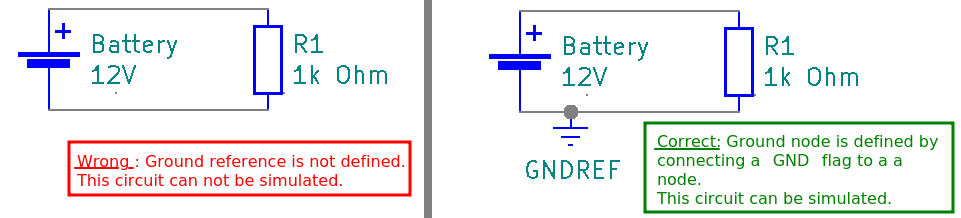
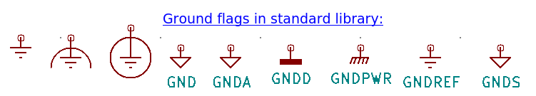

The ground node
What is the ground node?
The ground node is the electric node which is defined to always have an electric potential at zero volt.
All the other nodes have a voltage which relative to this ground node.
Every circuit that you want to simulate needs a ground node, because the algorithm that computes voltages needs to know which potential it shall use as reference value.

How can I add a ground node?
You can do so by adding a ground flag to the circuit and connecting it to a node.
In kicad you can use one of these flags (in the standard library settings all these defined as ground node flags):

These are:
power:Earth
power:Earth_Clean
power:Earth_Protective
power:GND
power:GNDA
power:GNDD
power:GNDPWR
power:GNDREF
power:GNDS
Can I use more than one ground flag ?
Yes you can, but you should watch out when doing so:
- All nodes that are connected with a ground node flag are connected to each other by these flags, even if you use different ones of these flags mentioned above.
- Ampere values are only calculated through electric components, but not at flags. You might want to add a component, like a small resistor next to the flags if you are missing any ampere values.
Therefor it is not recommended to use flags excessively, unless you really know what you are doing.
What else should I know about ground node?
In most circuits, ground is connected to the negative connection of the source, just like in the in the first image above. But that is not mandatory.
You can find more infos about ground node on wikipedia:
- in german language: https://de.wikipedia.org/wiki/Masse_(Elektronik)
- in french language: https://fr.wikipedia.org/wiki/Masse_(électricité)
- an insufficiently short article in english language (in Dec. 2020. The article might get better in the future, as wikipedia articles get edited from time to time): https://en.wikipedia.org/wiki/Chassis_ground